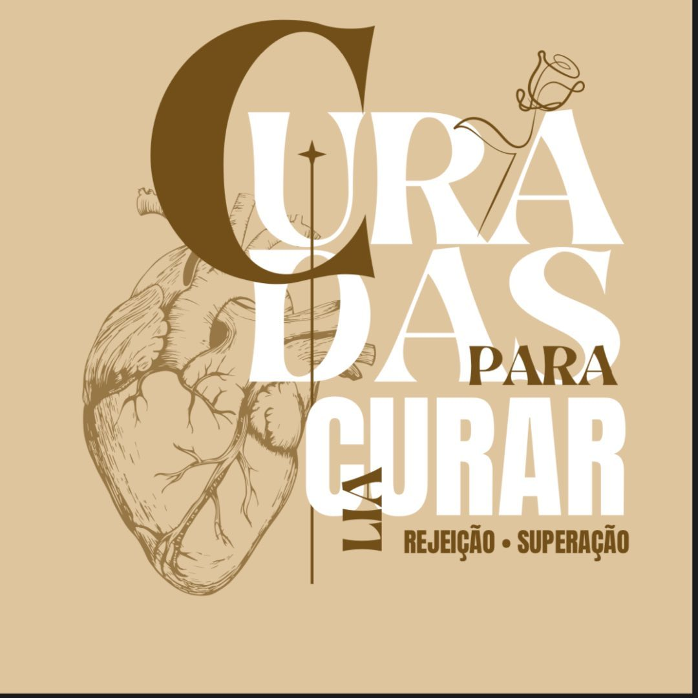

▶
Seu próximo vídeo
Adicione um arquivo em /videos
Vídeo · 01
Momentos da conferência
Amigas do Céu · AD Comadesma Área 41 apresentam

6ª edição
Rejeição · Superação
Uma conferência para mulheres que desejam ser alcançadas por Deus
e transformadas para alcançar outras.
Há feridas que Deus cura em nós para que, através de nós, outras pessoas também encontrem caminho.
Curadas para Curar
Sobre o evento
O Curadas para Curar é um projeto idealizado pela equipe Amigas do Céu para alcançar a totalidade do ser feminino — corpo, alma e espírito.
Ao longo de cada ciclo, são 4 semanas de campanha preparando os corações, seguidas por 2 dias de conferência totalmente voltados para a cura da alma.
O tema de cada edição nasce da história de uma mulher da Bíblia, e a missão permanece a mesma: aproximar cada mulher de Deus, fortalecendo sua fé e identidade para vencer as lutas do dia a dia.
“Ele cura os que têm o coração quebrantado e cuida das suas feridas.” Salmos 147:3
Preparação
4 semanas de campanha
Conferência
2 dias de encontro
Propósito
Curadas para curar
Edições anteriores
Memórias de mulheres reunidas em fé, louvor, oração e comunhão.
Experimente um pouco
Vídeos das edições podem ser adicionados aqui para apresentar a atmosfera da conferência.
Arraste para assistirPróxima edição
Seu lugar também está aqui
Traga uma amiga, uma irmã, uma vizinha. Ninguém deveria caminhar sozinha até a cura.
Antes de ir
A conferência é voltada para mulheres. Para informações específicas sobre inscrições e participação, acompanhe os canais oficiais do evento.
A próxima edição está indicada para a AD Comadesma Área 41, em Nova Olinda, Tocantins.
A programação detalhada será divulgada pelos canais oficiais. Siga o Instagram da conferência para receber as novidades.
Sim. A proposta do evento incentiva que você convide uma amiga, irmã ou vizinha para viver esse momento com você.